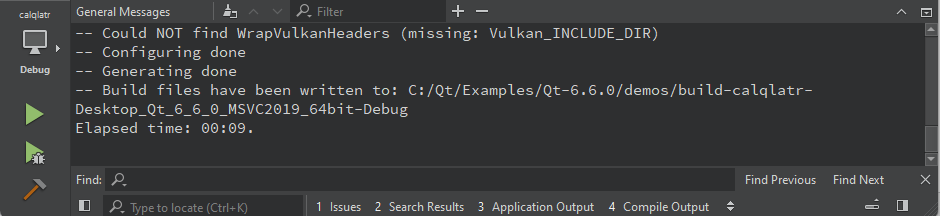

View output
The output views show output from several sources, such as a list of errors and warnings encountered during a build, detailed output from the compiler, status of a program when it is executed, debug output, or search results.

You can open output views in all modes
- Select the output view.
- Select View > Output. The menu items also display the keyboard shortcuts that you can use.
- Select Alt (Cmd on macOS) and the number of the view.
- Select , and then select the view to open.
To maximize an open output view, select the  (Maximize) button or press Alt+Shift+9.
(Maximize) button or press Alt+Shift+9.
To increase or decrease the output text size, select  (Zoom In) or
(Zoom In) or  (Zoom Out), or press Ctrl++ or Ctrl+-. Zooming is not supported in all output views.
(Zoom Out), or press Ctrl++ or Ctrl+-. Zooming is not supported in all output views.
Change text encoding
If the text in the output is not displayed correctly, Qt Creator might be using a different codec from the one used by the tools that generate the output. To specify the codec to use, select Preferences > Environment > Interface, and then select the codec in the Text codec for tools field.

Find and filter output
To search in output, press Ctrl+F when the view is active. Enter search criteria in the Find field. For more information, see Search in current file.
To filter output, enter a string in the Filter field.
To specify filtering options, select the button. You can filter output by using regular expressions or case-sensitivity. Select Show Non-matching Lines to hide the lines that match the filter.
Some output views do not support finding and filtering.
See also Output Views.